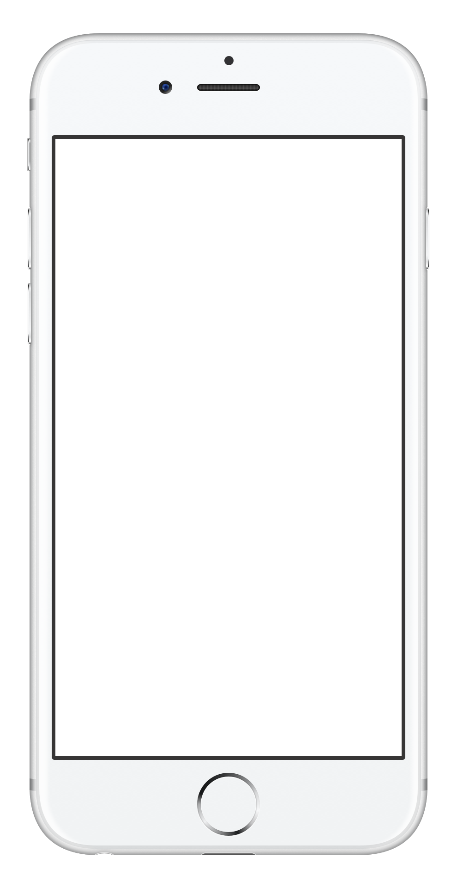

Shift Schedule
Type and Share
With this app you can quickly type in your shift schedule and share it with friends and family. The app automatically keeps all shared copies up to date.
In addition to the typed in schedule, the app also shows the events from your regular calendar app. This way you always have the complete picture. For instance when trading shifts with coworkers.
A dot marks the days that have events, you can press-and-hold to show these events. With one more tap on the revealed event you can jump over to the calendar app.

Shift ScheduleContact Us